00이 매뉴얼에 대하여
안전점검등 대가 산출기(건축물)는 동별 연면적·구조형식·용도를 넣으면 「시설물의 안전 및 유지관리 실시 등에 관한 지침」의 정액적산방식으로 정기안전점검·정밀안전점검·정밀안전진단·성능평가 대가를 계산하고, 산출근거가 붙은 A4 산출서로 출력하는 웹 계산도구입니다. 관리주체 담당자와 안전진단 실무자가 화면 순서대로 따라 하며 대가를 산출할 수 있도록 작성했습니다.
| 항목 | 내용 |
|---|---|
| 대상 프로그램 | 안전점검등 대가 산출기 (건축물) MANMIN Ver-1.0 (v1.0.4) — 탭 막대 「📘 매뉴얼」 버튼으로 이 문서가 열립니다 |
| 접속 주소 | manminkim-eng.github.io/safety-inspection-fee |
| 근거 | 시설물의 안전 및 유지관리에 관한 특별법(2026.8.28. 시행) 제37조 · 국토교통부고시 제2026-444호(2026.8.21. 시행) 제55조~제63조 · 별표 21~27 |
| 적용 단가 | 엔지니어링 노임단가 고급기술자 310,884원(한국엔지니어링협회, 2026.1.1. 적용) · 특별인부 시중노임 228,717원(대한건설협회, 2026.9.1. 적용) |
| 예제 | A = 앱 초기값(정기안전점검 · 1개동 3,500㎡) → 견적금액 4,420,000원 · B = 정밀안전점검 · 군집 5개동 → 54,300,000원 |
| 기준 시점 | 2026-11-09 — 화면 캡처 날짜 고정 |
01한눈에 보기
설치 없이 브라우저에서 바로 실행되는 단일 페이지 앱(PWA)입니다. 입력은 내 PC 브라우저 안에서만 처리되며 서버로 전송되지 않습니다.
무엇을 계산하나
과업 9종의 직접인건비·제경비·기술료·직접경비, 보정, 선택과업, 공급가액, 부가가치세, 견적금액
자동으로 정해지는 값
연면적별 기준인원수(보간), 조정비, 군집 계수, 여비 인원, 기계손료율, 경과년수 보정, 차량 대수·외업 일수
근거
시설물안전법 제37조 · 국토교통부고시 제2026-444호(2026.8.21. 시행) 제55조~제62조 · 별표 21~27
출력
A4 안전점검등 대가 산출서 — 총괄표와 산출근거 1~5(인쇄·PDF·JPG)
1-1. 화면 구성
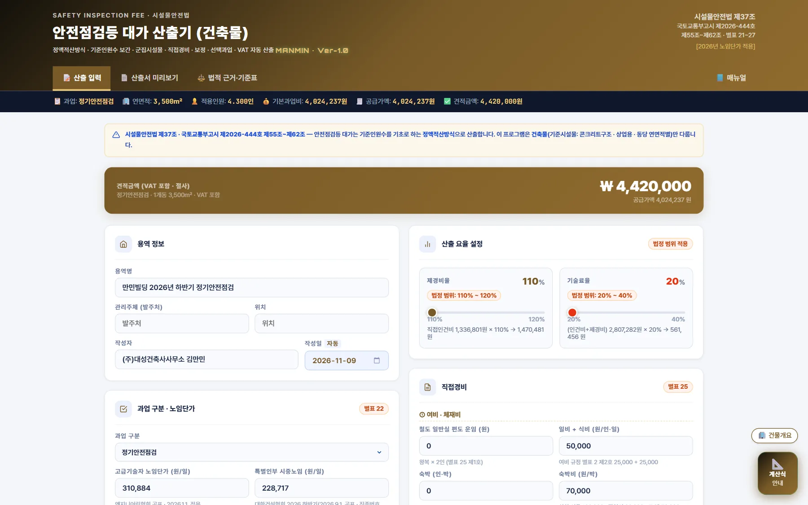
1234567- 1작업 탭: 산출 입력 · 산출서 미리보기 · 법적 근거·기준표 · 매뉴얼
- 2요약 스트립: 과업·연면적·적용인원·기본과업비·공급가액·견적금액이 입력할 때마다 갱신
- 3근거 안내: 시설물안전법 제37조 · 고시 제55조~제62조 · 정액적산방식
- 4견적금액 배너: 실시간 견적금액과 공급가액
- 5용역 정보: 용역명·관리주체·위치·작성자·작성일 — 산출서 표제로 들어감
- 6산출 요율 설정: 제경비율·기술료율
- 7오른쪽 아래 버튼: 「건물개요」(다른 도구와 현장 정보 주고받기) · 「계산식 안내」 창
| 탭 | 하는 일 | 본문 |
|---|---|---|
| 📝 산출 입력 | 용역 정보, 과업, 동별 건축물, 요율, 직접경비, 보정, 선택과업, 합계 입력과 실시간 결과 | 3-1~3-9 |
| 📄 산출서 미리보기 | A4 안전점검등 대가 산출서 미리보기 · 인쇄/PDF · JPG 저장 | 3-10~3-11 |
| ⚖️ 법적 근거·기준표 | 법적 근거 · 단가 기준 · 별표 22 기준인원수 표 · 별표 23 조정비 · 제62조 보정 | 3-12 |
| 📘 매뉴얼 | 이 매뉴얼을 새 창으로 엽니다(인터넷 연결 필요) | 1-3 |
1-2. 작업 탭·근거 표시
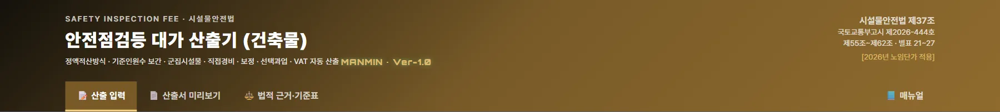
12345- 1산출 입력
- 2산출서 미리보기
- 3법적 근거·기준표
- 4📘 매뉴얼 — 이 매뉴얼을 새 창으로(탭 막대 오른쪽 끝)
- 5근거 법령·고시 표시
헤더 오른쪽에는 근거 법령과 고시 번호, 적용 노임단가 연도가 적혀 있습니다. 고시나 노임단가가 바뀌면 이 표시와 4장 내용을 함께 확인하십시오.
1-3. 설치·보관·매뉴얼
| 항목 | 내용 |
|---|---|
| 설치(선택) | 크롬·엣지 주소창의 설치 아이콘 또는 화면 아래 설치 안내를 누르면 홈 화면·바탕화면에 앱으로 설치됩니다. 아이폰은 사파리 공유 버튼 → 「홈 화면에 추가」 |
| 오프라인 | 한 번 연 뒤에는 인터넷이 끊겨도 계산·출력이 됩니다. 매뉴얼은 인터넷에 연결되어 있을 때만 열립니다(끊겨 있으면 「매뉴얼은 인터넷 연결 시 열립니다」 안내) |
| 입력값 보관 | 입력값은 저장되지 않습니다. 창을 닫거나 새로 고치면 초기값으로 돌아가므로, 결과는 산출서(PDF·JPG)로 남기십시오. 용역명·위치·발주처·작성자·연면적은 「건물개요」 버튼으로 이 브라우저에 담아 두었다가 다른 MANMIN 도구에서 불러올 수 있습니다 |
| 업데이트 | 새 버전이 올라오면 다음 접속 때 자동으로 바뀝니다. 화면이 예전 그대로면 새로 고침(Ctrl+F5) |
023분 따라하기
예제 A(초기값)로 6단계를 따라 하면 견적금액 4,420,000원이 나옵니다. 계산 버튼은 없습니다. 값을 바꾸는 즉시 결과가 바뀝니다.
- 과업 고르기「과업 구분 · 노임단가」 카드에서 과업을 고릅니다. 예제는 정기안전점검 — 기계손료율·인쇄비가 과업에 맞게 자동으로 바뀝니다(3-2).
- 동별 입력「대상 건축물 (동별)」에 연면적·구조형식·용도·사용승인연도를 넣습니다. 예제는 본관동 3,500㎡ · 철근콘크리트 · 업무용 · 2008년 — 기준 4.3 / 외업 2.3인(3-3).
- 요율 · 직접경비제경비율(110~120%)·기술료율(20~40%)을 정하고, 직접경비 카드에는 운임·숙박·인쇄비 같은 실비만 넣습니다. 예제는 110% · 20% · 초기값(3-4~3-5).
- 견적금액 확인견적금액 배너에 ₩ 4,420,000, 공급가액 4,024,237원이 표시됩니다. 경과 18년이라 보정비 1.050가 자동으로 곱해졌습니다(3-9).
- 산출서 확인「📄 산출서 미리보기」 탭에서 총괄표와 산출근거 1~5를 확인합니다(3-11).
- 인쇄·저장「인쇄 / PDF 저장」 또는 「JPG 저장」으로 산출서를 남깁니다(3-10).
| 항목 | 예제 A 계산 | 금액(원) |
|---|---|---|
| 1. 직접인건비 | 4.300인 × 310,884원 | 1,336,801 |
| 2. 제경비 | 직접인건비 × 110% | 1,470,481 |
| 3. 기술료 | (직접인건비 + 제경비) × 20% | 561,456 |
| 4. 직접경비 | 체재비 · 차량 · 보조인부 · 위험수당 · 인쇄비 | 463,869 |
| 기본과업비(보정 전) | 1 + 2 + 3 + 4 | 3,832,607 |
| 5. 대가 보정 | × 1.050 (경과 18년 → 1.05) | 191,630 |
| 공급가액 | 기본과업비(보정 후) + 선택과업비 0 | 4,024,237 |
| 7. 부가가치세 | 공급가액 × 10% | 402,423 |
| 견적금액 | 4,426,660 → 만 원 미만 절사 | 4,420,000 |
03화면별 기능 상세
산출 입력 탭의 카드 순서와 나머지 탭 순서로 설명합니다. 왼쪽 열은 용역·과업·건축물, 오른쪽 열은 요율·직접경비·보정·선택과업·합계입니다.
3-1. 용역 정보
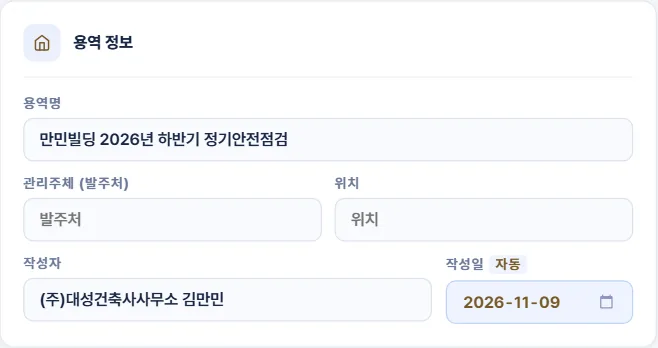
12345- 1용역명 — 산출서 「용 역 명」
- 2관리주체(발주처)
- 3위치
- 4작성자 — 산출서 서명란
- 5작성일 — 산출서 날짜(처음 열 때 오늘 날짜) · 경과년수 계산 기준 연도
작성일만 금액에 영향을 줍니다. 작성일의 연도에서 사용승인연도를 빼 경과년수를 구하기 때문입니다(4-9). 나머지 칸은 산출서에만 들어갑니다.
3-2. 과업 구분 · 노임단가
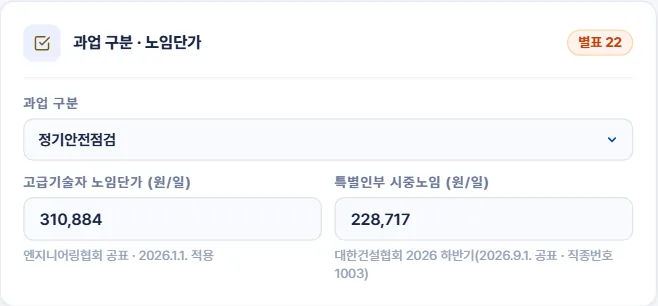
123- 1과업 구분 — 9종
- 2고급기술자 노임단가(원/일) — 엔지니어링 노임단가
- 3특별인부 시중노임(원/일) — 현지보조인부 노임에 쓰임
| 과업 | 여비 인원 | 기계·기구손료율 | 인쇄비 기준(초기값) |
|---|---|---|---|
| 정기안전점검 | 2인 | 규정 없음(0%) | 50쪽 · 10부 · 50,000원 |
| 정밀안전점검 | 8인 | 5% | 300쪽 · 10부 · 360,000원 |
| 정밀안전진단 | 10인 | 10% | 400쪽 · 20부 · 실비 입력 |
| 제1종성능평가 3종 (성능평가만 · 진단 포함 · 결과 활용) | 10인 | 10% | 실비 입력(포함형은 보고서 각각 계상) |
| 제2종성능평가 3종 (성능평가만 · 점검 포함 · 결과 활용) | 8인 | 5% | 실비 입력(포함형은 보고서 각각 계상) |
- 과업을 바꾸면 기계·기구손료율과 보고서 인쇄비가 위 표의 값으로 다시 들어갑니다. 바꾼 뒤 필요하면 직접 고칩니다.
- 노임단가 두 칸은 고칠 수 있습니다. 견적 전에 최신 공표값인지 확인하십시오(4-12).
3-3. 대상 건축물 (동별)
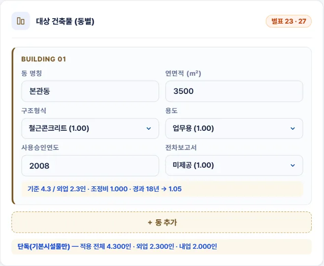
123456789- 1동 명칭
- 2연면적(㎡) — 동당 연면적
- 3구조형식 — 7종(괄호 안 조정비)
- 4용도 — 5종(괄호 안 조정비)
- 5사용승인연도 — 경과년수 보정
- 6전차보고서 — 제공 여부에 따른 보정
- 7동별 미리 계산 — 기준인원 · 조정비 · 경과년수 보정
- 8「＋ 동 추가」 — 2개동 이상
- 9적용 인원 — 산정유형과 전체 · 외업 · 내업 인원
- 연면적은 동마다 넣습니다. 기준인원수 표(별표 22)가 「동당 연면적별」이기 때문입니다.
- 2개동 이상이면 「군집시설물 적용」 체크가 나타납니다. 같은 구역에서 걸어서 옮겨 다닐 수 있는 동들이면 체크한 채로 두고(별표 27 계수 적용), 떨어져 있으면 체크를 풀어 동마다 따로 산정합니다(4-6).
- 동을 지우려면 동 제목 오른쪽 「✕ 삭제」를 누릅니다(1개동만 남으면 사라짐).
3-4. 산출 요율 설정
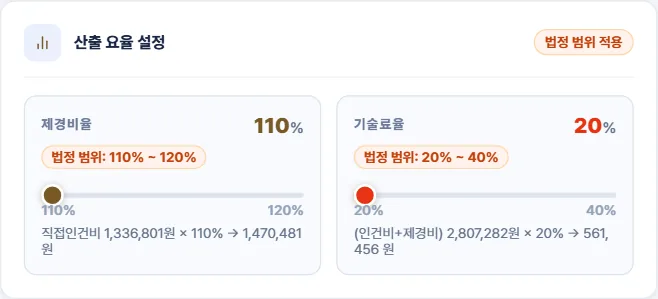
1234- 1제경비율 — 110~120%, 1% 단위
- 2제경비 계산 — 직접인건비 × 제경비율
- 3기술료율 — 20~40%, 1% 단위
- 4기술료 계산 — (직접인건비 + 제경비) × 기술료율
3-5. 직접경비
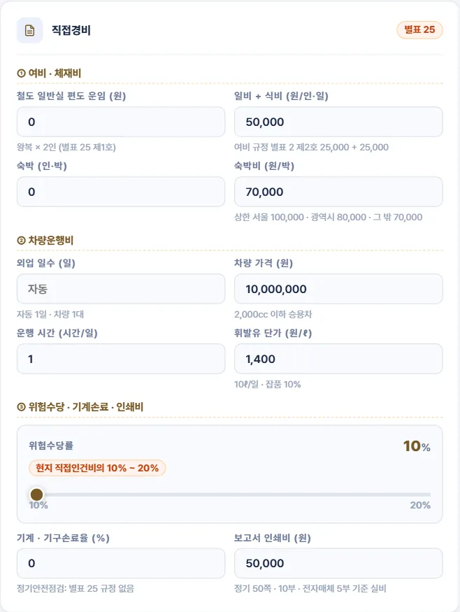
12345678- 1철도 일반실 편도 운임 — 왕복 × 과업별 인원
- 2일비 + 식비(원/인·일) — 외업 인원·일에 곱함
- 3숙박(인·박) — 숙박이 있을 때만
- 4외업 일수 — 비우면 외업인원 ÷ 4인 올림
- 5차량 가격 · 운행 시간 · 휘발유 단가
- 6위험수당률 — 10~20%
- 7기계·기구손료율 — 과업별 자동
- 8보고서 인쇄비 — 과업별 기준 실비
여비·체재비·차량운행비·현지보조인부·위험수당·기계손료·인쇄비 7항목은 별표 25 산식으로 자동 계산됩니다. 사용자는 운임·숙박·차량 가격처럼 현장마다 다른 실비만 넣습니다. 계산식은 4-8.
3-6. 대가 보정
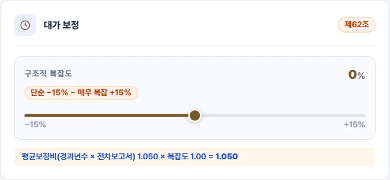
12- 1구조 복잡도 — −15% ~ +15%
- 2적용 보정비 — 평균보정비(경과년수 × 전차보고서) × 복잡도
경과년수와 전차보고서 보정은 동별 입력에서 자동으로 정해지고, 이 카드에서는 구조 복잡도만 정합니다. 보정비는 기본과업비 전체에 곱합니다(4-9).
3-7. 선택과업
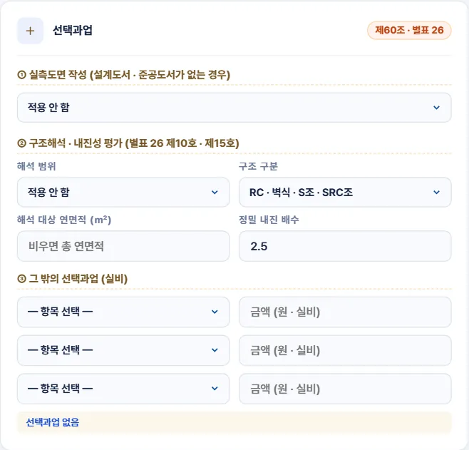
1234- 1실측도면 작성 — 정밀안전진단 대가의 10% 또는 20%
- 2구조해석 · 내진성 평가 — 별표 26 제10호 · 제15호
- 3그 밖의 선택과업 — 항목을 고르고 실비 입력(3행)
- 4선택과업 건수 · 합계
- 실측도면은 설계도서·준공도서가 없을 때 고릅니다. 금액은 지금 과업과 관계없이 같은 건축물의 정밀안전진단 대가(보정 후)를 다시 계산해 10%·20%를 곱합니다.
- 구조해석은 해석 대상 연면적(비우면 총 연면적)과 구조형식으로 고급기술자 인원을 정하고, 제경비·기술료율을 그대로 적용합니다(4-10).
3-8. 합계 · 계약 확인
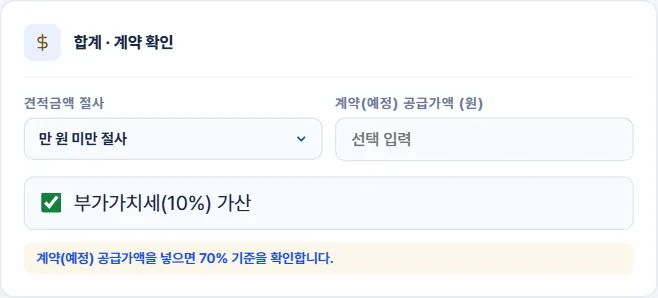
1234- 1견적금액 절사 — 절사 안 함 · 천 원 · 만 원(초기값)
- 2계약(예정) 공급가액 — 선택 입력
- 3부가가치세(10%) 가산
- 470% 확인 — 계약 금액이 산정 대가의 몇 %인지
계약(예정) 공급가액을 넣으면 산정 대가(공급가액)의 70% 미만인지 알려 줍니다. 정밀안전점검·정밀안전진단(과 이를 포함한 성능평가)은 70% 미만이면 국토안전관리원 평가 대상이라는 문구가 함께 표시됩니다(4-11).
3-9. 요약 스트립 · 견적금액
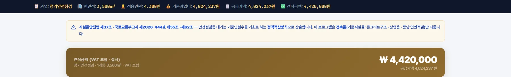
12345- 1요약 스트립 — 과업 · 연면적 · 적용인원 · 기본과업비 · 공급가액 · 견적금액
- 2근거 안내
- 3과업 · 동 수 · 연면적 합계 · VAT 포함 여부
- 4견적금액(VAT 포함 · 절사)
- 5공급가액(VAT 제외)
3-10. 산출서 미리보기·출력
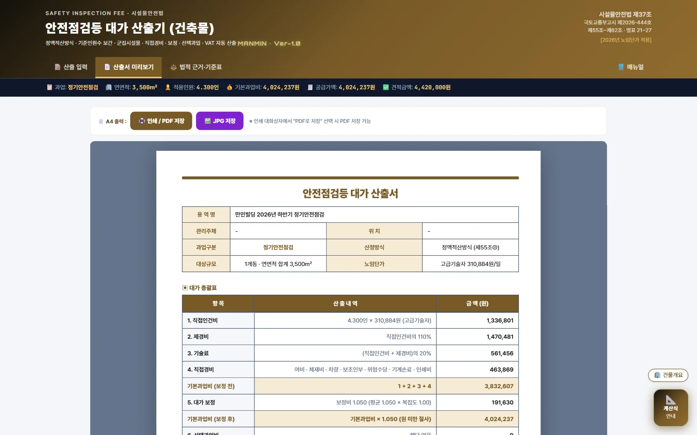
123- 1「인쇄 / PDF 저장」 — 인쇄 창에서 대상을 「PDF로 저장」으로 고르면 PDF
- 2「JPG 저장」 — A4 쪽마다 그림 파일
- 3A4 안전점검등 대가 산출서 미리보기
산출서는 내용에 따라 A4 2~3매입니다. 인쇄하면 쪽마다 머리·꼬리 선이 그려지고, 제출 문구·날짜·작성자와 꼬리말은 마지막 장 맨 아래에 붙습니다(v1.0.3). 표가 길어 마지막 장에 자리가 없으면 표 바로 아래에 이어서 나옵니다.
3-11. A4 산출서 구성
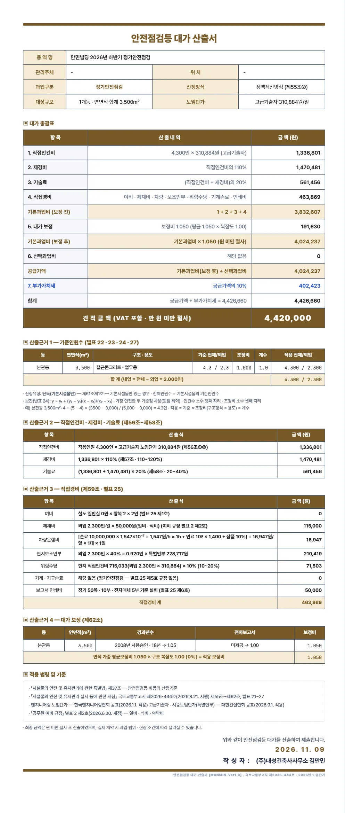
12345678- 1용역 개요 — 용역명 · 관리주체 · 위치 · 과업구분 · 산정방식 · 대상규모 · 노임단가
- 2대가 총괄표 — 1~7 항목과 견적금액
- 3산출근거 1 — 동별 기준인원수 · 조정비 · 계수 · 보간식 예시
- 4산출근거 2 — 직접인건비 · 제경비 · 기술료
- 5산출근거 3 — 직접경비 7항목
- 6산출근거 4 — 동별 경과년수 · 전차보고서 보정
- 7적용 법령 및 기준
- 8제출 문구 · 날짜 · 작성자
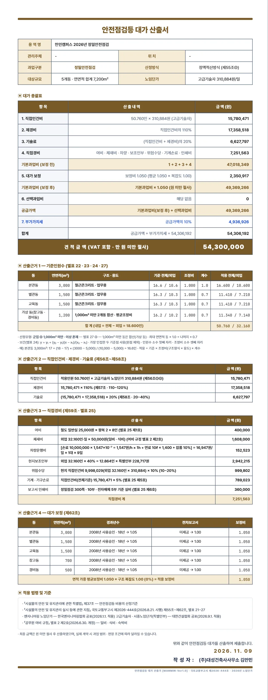
12- 1산출근거 1 — 가상 동과 계수 0.7
- 2산출근거 3 — 여비 8인 · 차량 대수 · 외업 일수
선택과업이 있으면 「산출근거 5 — 선택과업」이 추가됩니다. 계약(예정) 금액을 넣었으면 70% 확인 결과가 법령 아래 비고에 들어갑니다.
3-12. 법적 근거·기준표 탭
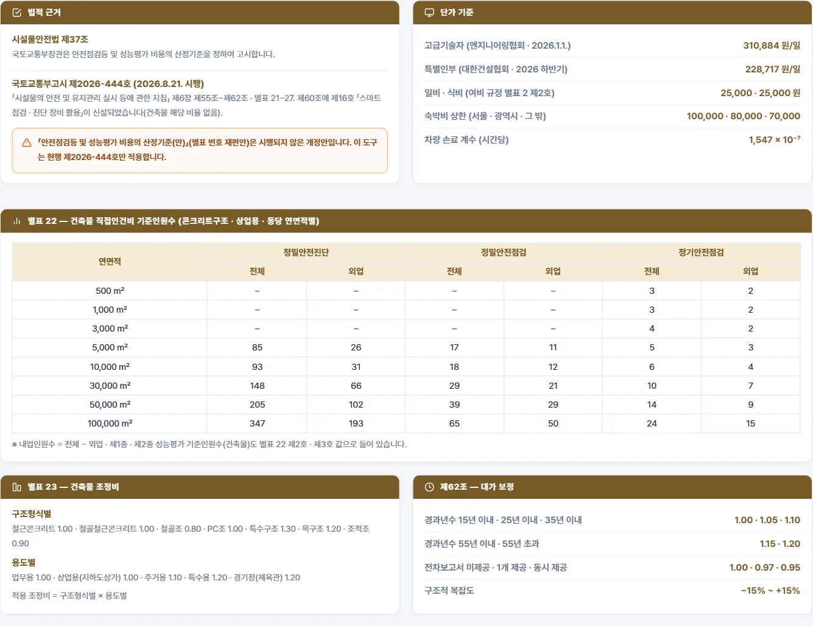
12345- 1법적 근거 — 시설물안전법 제37조 · 고시 제2026-444호
- 2단가 기준 — 고급기술자 · 특별인부 · 체재비
- 3별표 22 — 건축물 기준인원수(정밀진단 · 정밀점검 · 정기점검)
- 4별표 23 — 구조형식 · 용도 조정비
- 5제62조 — 경과년수 · 전차보고서 · 복잡도 보정
3-13. 계산식 안내 창
오른쪽 아래 「계산식 안내」 버튼을 누르면 「안전점검등 대가 산출 가이드」 창이 열립니다. 탭 4개로 이용방법, 산정 구조, 보간·군집, 핵심 주의사항을 볼 수 있습니다. 닫을 때는 ✕, 창 바깥, 또는 Esc를 누릅니다.
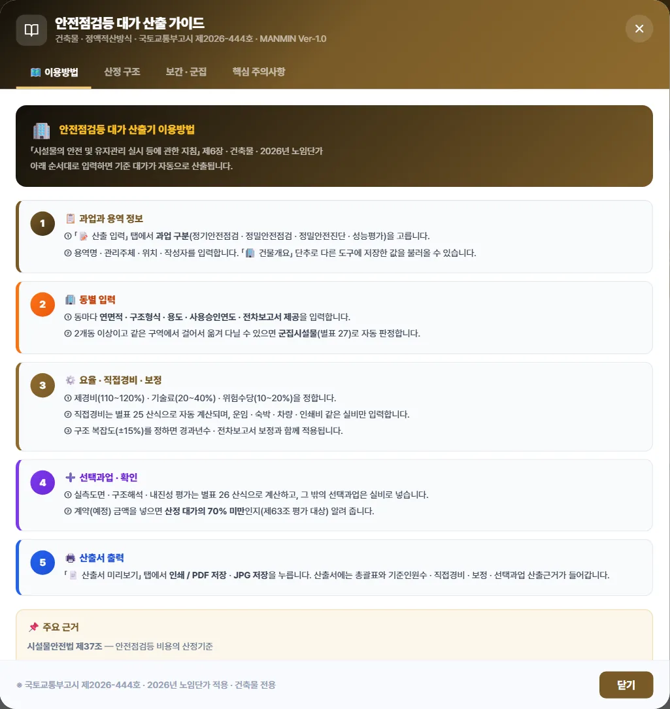
1234- 1이용방법 — 5단계 사용 순서 · 주요 근거
- 2산정 구조 — 대가 구성 · 항목별 산식 · 직접경비
- 3보간 · 군집 — 별표 24 보간식 · 별표 27 군집 3유형
- 4핵심 주의사항 — 70% 계약 · 노임단가 · 보정 범위 · 용도
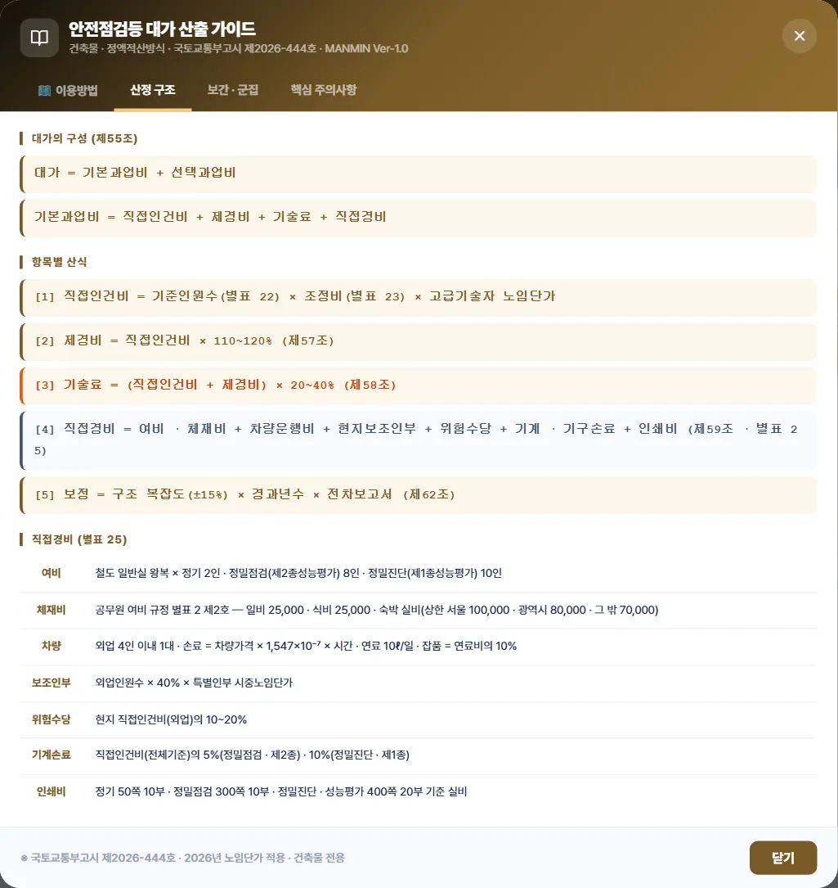
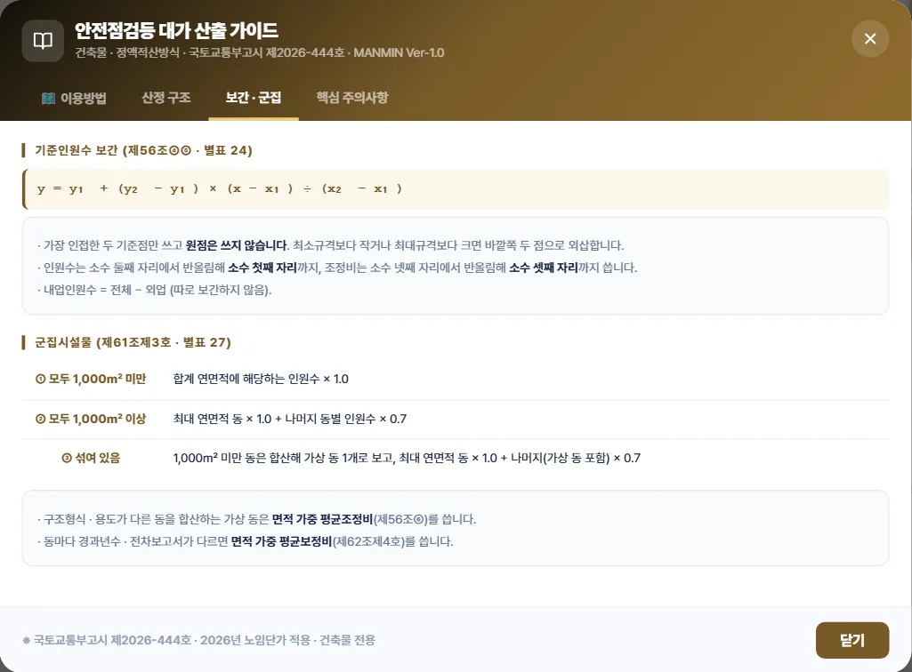
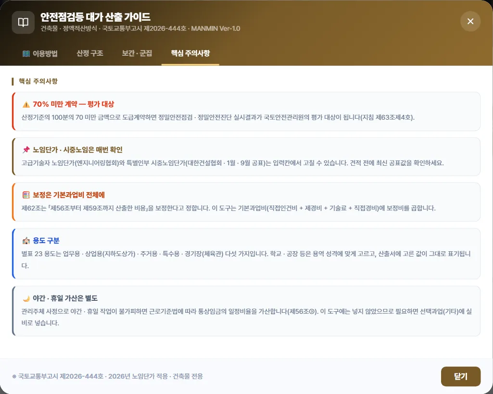
3-14. 모바일
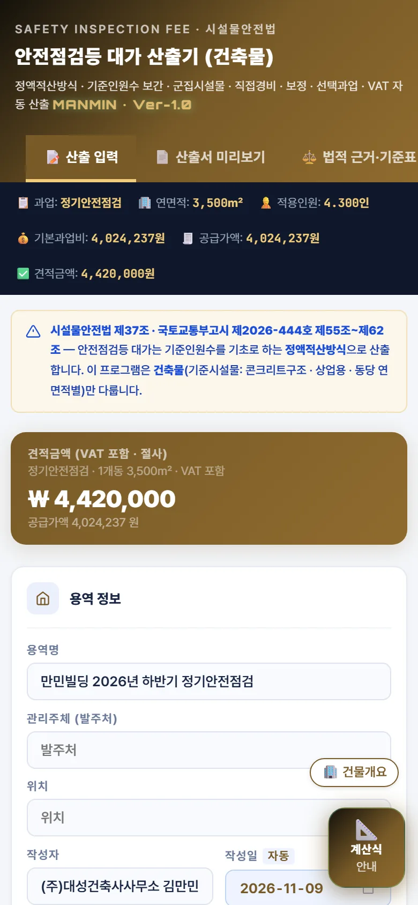
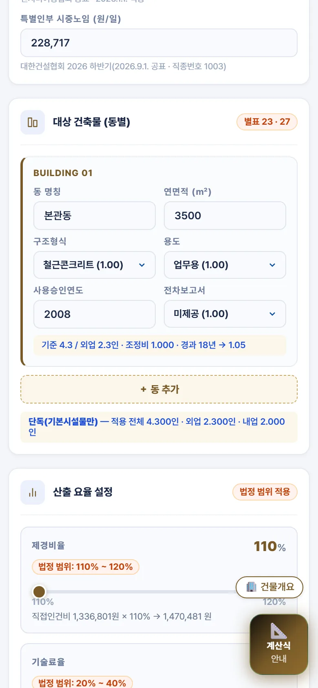
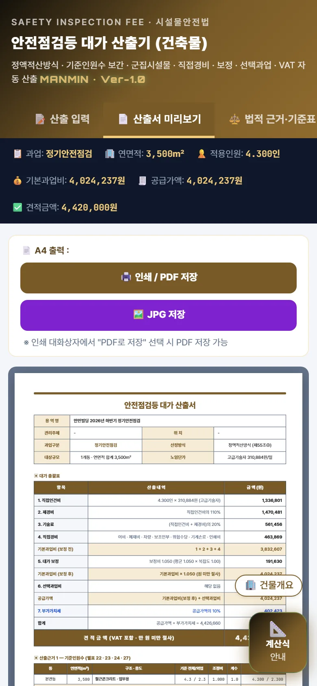
- 휴대폰에서는 카드가 한 줄로 쌓입니다. 탭 막대는 좌우로 밀 수 있으며, 「📘 매뉴얼」은 오른쪽 끝에 있습니다.
- 산출서는 화면 폭에 맞춰 축소되어 보이고, 저장한 PDF·JPG는 A4 크기 그대로입니다.
04기술기준 해설
프로그램이 따르는 고시 조항을 계산 순서대로 정리했습니다. 조문은 국가법령정보센터 원문(2026-11-09 조회)을 기준으로 했습니다.
4-1. 근거 법령과 고시
| 조항 | 요지 | 법령 |
|---|---|---|
| 시설물안전법 제37조 | 국토교통부장관은 안전점검등의 대행에 필요한 비용의 산정기준을 정하여 고시하여야 한다 | 시설물의 안전 및 유지관리에 관한 특별법(2026.8.28. 시행) |
| 지침 제6장 제55조~제62조 | 안전점검등 및 성능평가 비용의 산정기준 — 정액적산방식, 기준인원수, 제경비, 기술료, 직접경비, 선택과업, 군집시설물, 보정 | 국토교통부고시 제2026-444호(2026.8.21. 시행) |
| 지침 제63조 | 산정기준의 100분의 70 미만 도급계약의 평가 | 국토교통부고시 제2026-444호(2026.8.21. 시행) |
| 별표 21~27 | 기준시설물 · 기준인원수 · 조정비 · 보간 · 직접경비 · 선택과업 · 군집시설물 | 국토교통부고시 제2026-444호(2026.8.21. 시행) |
4-2. 대가의 구성 (제55조)
안전점검등의 대가는 기준인원수를 기초로 하는 정액적산방식으로 산정합니다.
| 구분 | 구성 |
|---|---|
| 대가 | 기본과업비 + 선택과업비 |
| 기본과업비 | 직접인건비 + 제경비 + 기술료 + 직접경비 |
| 직접인건비 | 적용 인원수(기준인원수 × 조정비 × 군집 계수) × 고급기술자 노임단가 |
| 보정 | 기본과업비 × 보정비(경과년수 × 전차보고서 × 구조 복잡도) |
4-3. 기준인원수 (별표 22)
건축물의 기준시설물은 콘크리트구조 · 상업용이고, 기준인원수는 동당 연면적별로 정해져 있습니다. 표의 값은 「전체 / 외업」 인원(고급기술자 기준)이며 내업인원수는 전체 − 외업입니다.
| 연면적 | 정밀안전진단 | 정밀안전점검 | 정기안전점검 |
|---|---|---|---|
| 500㎡ | – | – | 3 / 2 |
| 1,000㎡ | – | – | 3 / 2 |
| 3,000㎡ | – | – | 4 / 2 |
| 5,000㎡ | 85 / 26 | 17 / 11 | 5 / 3 |
| 10,000㎡ | 93 / 31 | 18 / 12 | 6 / 4 |
| 30,000㎡ | 148 / 66 | 29 / 21 | 10 / 7 |
| 50,000㎡ | 205 / 102 | 39 / 29 | 14 / 9 |
| 100,000㎡ | 347 / 193 | 65 / 50 | 24 / 15 |
성능평가는 별표 22 제2호(제1종)·제3호(제2종)의 건축물 표(5,000~100,000㎡ 5개 기준점, 성능평가만 · 진단(점검) 포함 · 결과 활용 3가지)를 씁니다. 「–」 칸은 기준점이 아니므로 보간에 쓰지 않습니다.
4-4. 보간 (별표 24 · 제56조④⑤)
규모가 기준점 사이에 있거나(B점), 최소규격보다 작거나(A점), 최대규격보다 크면(C점) 모두 다음 식을 씁니다.
- x₁ · x₂는 인접한 작은 쪽 · 큰 쪽 기준점이며, 원점을 쓰면 안 됩니다. 범위 밖이면 가장 가까운 끝의 두 점으로 외삽합니다.
- 인원수는 소수 둘째 자리에서 반올림해 소수 첫째 자리까지, 조정비는 소수 넷째 자리에서 반올림해 소수 셋째 자리까지 씁니다.
- 예) 정기안전점검 3,500㎡: 4 + (5 − 4) × (3,500 − 3,000) ÷ (5,000 − 3,000) = 4.25 → 4.3인, 외업 2 + (3 − 2) × 0.25 = 2.25 → 2.3인(예제 A).
- 예) 정밀안전점검 3,000㎡(최소규격 5,000㎡보다 작음): 17 + (18 − 17) × (3,000 − 5,000) ÷ (10,000 − 5,000) = 16.6인(예제 B 본관동).
4-5. 조정비 (별표 23 다목)
| 구조형식 | 조정비 |
|---|---|
| 철근콘크리트 | 1.00 |
| 철골철근콘크리트 | 1.00 |
| 철골조 | 0.80 |
| PC조 | 1.00 |
| 특수구조 | 1.30 |
| 목구조 | 1.20 |
| 조적조 | 0.90 |
| 용도 | 조정비 |
|---|---|
| 업무용 | 1.00 |
| 상업용, 지하도상가 | 1.00 |
| 주거용 | 1.10 |
| 특수용 | 1.20 |
| 경기장, 체육관 | 1.20 |
동별 조정비 = 구조형식 조정비 × 용도 조정비(소수 셋째 자리). 적용 인원 = 기준인원수 × 조정비 × 군집 계수(소수 셋째 자리).
4-6. 군집시설물 (별표 27 · 제61조제3호)
| 유형 | 전체인원수 |
|---|---|
| ① 모두 1,000㎡ 미만 | 합계 연면적에 해당하는 인원수 × 1.0 |
| ② 모두 1,000㎡ 이상 | 최대 연면적 동 × 1.0 + 나머지 동별 인원수 × 0.7 |
| ③ 섞여 있음 | 1,000㎡ 미만 동은 합산해 가상 동 1개로 보고, 최대 연면적 동 × 1.0 + 나머지(가상 동 포함) × 0.7 |
- 군집시설물은 같은 구역에서 걸어서 옮겨 다닐 수 있는 2개동 이상의 건축물입니다(지침 제2조제11호다목). 해당하지 않으면 「군집시설물 적용」 체크를 풀어 동마다 기본시설물(× 1.0)로 산정합니다.
- 구조형식·용도가 다른 동을 합산하는 가상 동은 면적 가중 평균조정비(제56조⑥)를 씁니다.
- 1,000㎡ 미만 동이 하나뿐이면 합산 없이 그 동을 그대로 씁니다.
4-7. 직접인건비 · 제경비 · 기술료 (제56조~제58조)
| 항목 | 산식 | 끝수 |
|---|---|---|
| 직접인건비 | 적용 인원(소수 셋째 자리) × 고급기술자 노임단가 | 원 미만 버림 |
| 제경비 | 직접인건비 × 110~120% | 원 미만 버림 |
| 기술료 | (직접인건비 + 제경비) × 20~40% | 원 미만 버림 |
4-8. 직접경비 (제59조 · 별표 25)
| 항목 | 산식 |
|---|---|
| 여비 | 철도 일반실 운임 × 왕복 2 × 과업별 인원(정기 2 · 정밀점검·제2종 8 · 정밀진단·제1종 10인) |
| 체재비 | 외업 인원·일 × (일비 + 식비) + 숙박 인·박 × 숙박비 — 공무원 여비 규정 별표 2 제2호 |
| 차량운행비 | [차량가격 × 1,547×10⁻⁷(원/h, 반올림) × 운행시간 + 연료 10ℓ × 단가 + 잡품(연료비의 10%)] × 차량 대수 × 외업 일수 — 외업 4인 이내 1대 |
| 현지보조인부 | 외업 인원 × 40%(소수 셋째 자리) × 특별인부 시중노임 |
| 위험수당 | 현지 직접인건비(외업 인원 × 노임단가) × 10~20% |
| 기계·기구손료 | 직접인건비(전체 기준) × 5%(정밀점검·제2종) · 10%(정밀진단·제1종) — 정기점검은 규정 없음 |
| 보고서 인쇄비 | 정기 50쪽 10부 · 정밀점검 300쪽 10부 · 정밀진단·성능평가 400쪽 20부 기준 실비 — 진단(점검) 포함 성능평가는 보고서 각각 계상 |
외업 일수를 비워 두면 외업 인원 ÷ 4인을 올림한 일수, 차량 대수는 외업 인원 ÷ 일수 ÷ 4인을 올림한 대수(최소 1대)를 씁니다.
4-9. 대가 보정 (제62조)
| 경과년수 | 보정비 |
|---|---|
| 15년 이내 | 1.00 |
| 15년 초과 25년 이내 | 1.05 |
| 25년 초과 35년 이내 | 1.10 |
| 35년 초과 55년 이내 | 1.15 |
| 55년 초과 | 1.20 |
| 전차보고서 | 보정비 |
|---|---|
| 미제공 | 1.00 |
| 보고서 또는 야장 CAD 1개 제공 | 0.97 |
| 보고서 및 야장 CAD 동시 제공 | 0.95 |
- 경과년수 = 작성일 연도 − 사용승인연도. 연도를 비우면 1.00.
- 동마다 경과년수 × 전차보고서 보정비를 구하고, 여러 동이면 면적 가중 평균(제62조제4호)을 냅니다.
- 구조 복잡도(±15%)를 곱한 값이 적용 보정비이며, 기본과업비(제56조~제59조로 산출한 비용 전체)에 곱해 원 미만을 버립니다.
4-10. 선택과업 (제60조 · 별표 26)
| 항목 | 산정 |
|---|---|
| 실측도면 작성(제1호) | 정밀안전진단 대가(보정 후) × 10%(기본도면) · 20%(기본도면 + 부재별 상세구조도) |
| 구조해석(제10호 (3) 건축물) | RC·벽식·S조·SRC조 7(5,000㎡ 이하) · 8 · 11 · 14 · 21인 / PC조·주상복합 11 · 12 · 16 · 21 · 32인 / 특수구조 14 · 16 · 22 · 27 · 42인(5천 · 1만 · 3만 · 5만 · 10만㎡ 보간) × 노임단가 + 제경비 + 기술료 |
| 내진성 평가(제15호) | 간략 내진해석 = 구조해석 × 2.0 · 정밀 내진해석 = 구조해석 × 2.5~3.0 |
| 그 밖의 선택과업 | 지질·지반조사, 재료시험, 가설재, 비파괴재하시험, 전문가 자문, 마감재 해체·복구 등 — 실비(제55조③) |
4-11. 70% 기준 (제63조제4호)
산정기준의 100분의 70 미만 금액으로 도급계약하면 정밀안전점검·정밀안전진단 실시결과가 국토안전관리원의 평가 대상이 됩니다. 프로그램은 공급가액의 70%(원 미만 올림)와 계약(예정) 공급가액을 비교합니다.
4-12. 노임단가
| 구분 | 단가 | 공표 | 쓰이는 곳 |
|---|---|---|---|
| 고급기술자 (엔지니어링 노임단가) | 310,884원/일 | 한국엔지니어링협회 공표 · 2026.1.1. 적용 | 직접인건비 · 위험수당 · 구조해석 |
| 특별인부 (시중노임단가) | 228,717원/일 | 대한건설협회 2026년 하반기 · 2026.9.1. 적용 · 직종번호 1003 | 현지보조인부 |
시중노임단가는 해마다 1월·9월에 공표됩니다. 다음 공표값이 나오면 입력칸을 고치거나 새 버전을 쓰십시오.
4-13. 반올림·절사 정리
| 대상 | 처리 |
|---|---|
| 기준인원수(보간) | 소수 첫째 자리(둘째 자리 반올림) — 제56조④ |
| 조정비 · 평균조정비 · 보정비 | 소수 셋째 자리(넷째 자리 반올림) — 제56조⑤ |
| 적용 인원 · 보조인부 인원 | 소수 셋째 자리 |
| 금액 | 항목마다 원 미만 버림 |
| 견적금액 | 공급가액 + 부가가치세를 선택한 단위(절사 안 함 · 천 원 · 만 원) 미만 버림 |
4-14. 프로그램이 다루지 않는 것
- 건축물 외의 시설물(교량 · 터널 · 항만 · 댐 · 하천 · 수도 · 옹벽 · 절토사면) — 별표 22의 다른 표를 씁니다.
- 긴급안전점검 — 과업 목록에 없습니다.
- 실시 대상 · 시기 판정, 수행기관 등록 요건.
05실무 작업 방법
5-1. 단계별 절차
- 자료 모으기건축물대장(동별 연면적 · 구조 · 용도 · 사용승인일), 전차 점검·진단 보고서와 야장 CAD 보유 여부, 설계도서 보유 여부.
- 과업 · 동 구성과업을 고르고 동을 모두 넣습니다. 같은 구역의 여러 동이면 군집시설물 적용 여부를 정합니다.
- 현장 실비철도 운임(가장 가까운 역 기준 일반실), 숙박 필요 여부, 차량, 인쇄 쪽수·부수를 현장에 맞게 넣습니다.
- 보정 · 선택과업구조가 복잡하거나 단순하면 복잡도를 정하고, 도면이 없거나 구조해석이 필요하면 선택과업을 고릅니다.
- 계약 금액 확인계약(예정) 공급가액을 넣어 70% 기준을 확인합니다.
- 산출서 제출PDF로 저장해 견적서 · 내역서와 함께 제출합니다.
5-2. 제출 전 확인
| 항목 | 확인 |
|---|---|
| 작성일 | 경과년수 보정 기준 연도가 맞는가 |
| 노임단가 | 고급기술자 · 특별인부가 적용 시점의 공표값인가 |
| 연면적 | 동당 연면적인가(전체 합계를 한 동에 넣지 않았는가) |
| 군집 | 떨어진 동에 군집 계수를 적용하지 않았는가 |
| 인쇄비 | 성능평가에 진단(점검) 보고서를 포함하면 각각 계상했는가 |
| VAT · 절사 | 제출처가 요구하는 부가가치세 포함 여부와 절사 단위인가 |
5-3. 예제 B — 정밀안전점검 · 군집 5개동
같은 구역의 5개동(3,000 · 1,500 · 1,500 · 700 · 500㎡, 모두 철근콘크리트 · 업무용 · 2008년)을 정밀안전점검으로 산정한 예입니다. 1,000㎡ 미만 2개동이 섞여 있어 군집 ③ 1,000㎡ 미만 · 이상 혼재으로 판정됩니다.
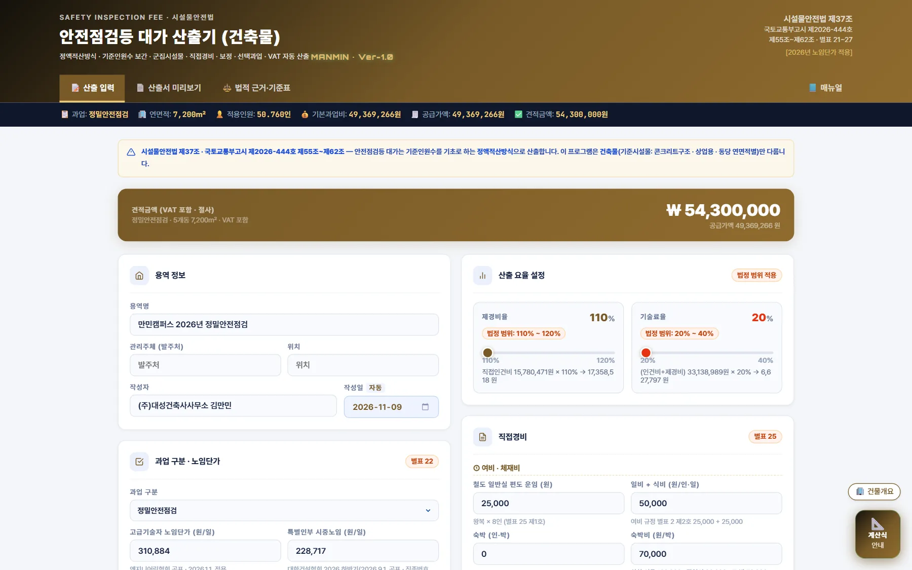
123- 1요약 스트립
- 2견적금액
- 35개동 입력
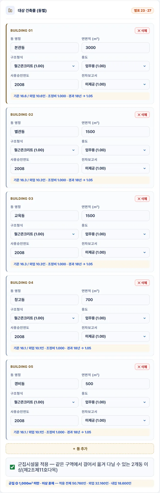
12345- 1본관동 3,000㎡ — 기준 16.6 / 외업 10.6인
- 2창고동 700㎡
- 3경비동 500㎡
- 4군집시설물 적용
- 5군집 ③ 적용 인원
| 동 | 연면적(㎡) | 기준 전체/외업(인) | 조정비 | 계수 | 적용 전체/외업(인) |
|---|---|---|---|---|---|
| 본관동 | 3,000 | 16.6 / 10.6 | 1.000 | 1.0 | 16.600 / 10.600 |
| 별관동 | 1,500 | 16.3 / 10.3 | 1.000 | 0.7 | 11.410 / 7.210 |
| 교육동 | 1,500 | 16.3 / 10.3 | 1.000 | 0.7 | 11.410 / 7.210 |
| 가상 동(창고동 · 경비동) | 1,200 | 16.2 / 10.2 | 1.000 | 0.7 | 11.340 / 7.140 |
| 합계 | 7,200 | 50.760 / 32.160 |
창고동 700㎡와 경비동 500㎡를 합한 가상 동 1,200㎡를 하나의 동으로 보고, 최대 연면적인 본관동만 × 1.0, 나머지 3개(별관동 · 교육동 · 가상 동)는 × 0.7을 곱했습니다.
| 항목 | 예제 B 계산 | 금액(원) |
|---|---|---|
| 1. 직접인건비 | 50.760인 × 310,884원 | 15,780,471 |
| 2. 제경비 | × 110% | 17,358,518 |
| 3. 기술료 | × 20% | 6,627,797 |
| 4. 직접경비 | 여비 25,000 × 2 × 8인 = 400,000 · 외업 9일 · 차량 1대 · 기계손료 5% 등 | 7,251,563 |
| 기본과업비(보정 전) | 1 + 2 + 3 + 4 | 47,018,349 |
| 5. 대가 보정 | × 1.050 | 2,350,917 |
| 공급가액 | 기본과업비(보정 후) | 49,369,266 |
| 7. 부가가치세 | × 10% | 4,936,926 |
| 견적금액 | 만 원 미만 절사 | 54,300,000 |
06문제 해결·FAQ
| 증상 | 해결 |
|---|---|
| 견적금액이 0원이다 | 연면적이 비어 있거나 고급기술자 노임단가가 0입니다. 동별 미리 계산 칸에 「연면적을 입력하세요」가 보이면 연면적을 넣습니다. |
| 정밀안전점검인데 3,000㎡ 인원이 이상하다 | 정밀점검 · 정밀진단 표는 5,000㎡부터 있어서 그보다 작으면 5,000 · 10,000㎡ 두 점으로 외삽합니다(별표 24 A점). 고시가 정한 방식입니다. |
| 군집 체크가 안 보인다 | 2개동 이상일 때만 나타납니다. 「＋ 동 추가」로 동을 늘리십시오. |
| 예제와 보정비가 다르다 | 작성일 연도가 바뀌면 경과년수가 달라집니다. 예제는 2026년 기준입니다. |
| 과업을 바꿨더니 인쇄비가 바뀌었다 | 과업을 바꾸면 기계·기구손료율과 인쇄비가 별표 25 기준값으로 다시 들어갑니다. 직접 고친 값이 있었다면 다시 넣으십시오. |
| 인쇄하면 서명란 위가 비어 있다 | 마지막 장의 남는 공간을 비우고 제출 문구 · 작성자를 맨 아래에 붙이기 때문입니다(정상). |
| 매뉴얼이 안 열린다 | 매뉴얼은 인터넷 연결이 필요합니다. 오프라인이면 「매뉴얼은 인터넷 연결 시 열립니다」가 표시됩니다. |
| 예전 화면이 보인다 | 새로 고침(Ctrl+F5) 하거나, 설치한 앱이면 한 번 닫았다가 다시 엽니다. |
A부록
A1. 예제 입력값
| 항목 | 예제 A(초기값) | 예제 B |
|---|---|---|
| 용역명 | 만민빌딩 2026년 하반기 정기안전점검 | 만민캠퍼스 2026년 정밀안전점검 |
| 과업 | 정기안전점검 | 정밀안전점검 |
| 동 | 본관동 3,500㎡ · 철근콘크리트 · 업무용 · 2008년 · 전차 미제공 | 3,000 · 1,500 · 1,500 · 700 · 500㎡ · 같은 조건 · 군집 적용 |
| 노임단가 | 310,884 / 228,717 | 같음 |
| 제경비 / 기술료 / 위험수당 | 110% / 20% / 10% | 같음 |
| 철도 운임(편도) | 0 | 25,000 |
| 일비+식비 / 숙박 | 50,000 / 0박 | 같음 |
| 기계손료 / 인쇄비 | 0% / 50,000 | 5% / 360,000 |
| 복잡도 · 선택과업 | 0% · 없음 | 같음 |
| 절사 · VAT | 만 원 · 포함 | 같음 |
| 공급가액 | 4,024,237원 | 49,369,266원 |
| 견적금액 | 4,420,000원 | 54,300,000원 |
A2. 버전 변경 내역
| 버전 | 내용 |
|---|---|
| Ver-1.0 · v1.0.4 (2026-11-09) | 사용자 매뉴얼 연결 — 탭 막대 「📘 매뉴얼」, 매뉴얼 웹 · PDF 공개 |
| Ver-1.0 · v1.0.3 (2026-11-09) | 인쇄 — 제출 문구 · 날짜 · 작성자와 꼬리말을 마지막 장 맨 아래에 붙임 |
| Ver-1.0 · v1.0.2 (2026-11-09) | 특별인부 시중노임 2026 하반기 228,717원 적용 |
| Ver-1.0 · v1.0.0~v1.0.1 (2026-11-09) | 첫 공개(고시 제2026-444호 · 과업 9종 · 군집 · 보정 · 선택과업) · A4 인쇄 쪽마다 머리 · 꼬리 선 |
A3. 용어
| 용어 | 뜻 |
|---|---|
| 안전점검등 | 정기안전점검 · 정밀안전점검 · 긴급안전점검 · 정밀안전진단을 아우르는 말 |
| 정액적산방식 | 기준인원수를 기초로 직접인건비를 정하고 제경비 · 기술료 · 직접경비를 더하는 대가 산정 방식(제55조) |
| 기준시설물 | 기준인원수를 정한 표준 규격 — 건축물은 콘크리트구조 · 상업용(별표 21) |
| 기준인원수 | 기준시설물의 과업 수행에 드는 고급기술자 인원(전체 / 외업) |
| 외업 · 내업 | 현장 조사 인원 / 사무실 분석 · 보고서 인원(내업 = 전체 − 외업) |
| 조정비 | 구조형식 · 용도가 기준시설물과 다를 때 곱하는 비율(별표 23) |
| 군집시설물 | 같은 구역에서 걸어서 옮겨 다닐 수 있는 2개동 이상의 시설물(별표 27) |
| 가상 동 | 군집에서 1,000㎡ 미만 동을 합산해 하나로 본 동 |
| 보정비 | 경과년수 · 전차보고서 · 구조 복잡도에 따른 대가 조정 비율(제62조) |
| 선택과업 | 기본과업 외에 필요에 따라 추가하는 과업(제60조 · 별표 26) |
| 공급가액 | 부가가치세를 더하기 전 금액 |